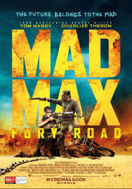
films1Films
Fifteen action films worth an evening
Fifteen action films worth an evening, selected with IMDb ratings of 7.0/10 or higher.
Published: 2026-09-07 · IMDb 7.0+Read articleSwiftChannels Blog

films1Fifteen action films worth an evening, selected with IMDb ratings of 7.0/10 or higher.
Published: 2026-09-07 · IMDb 7.0+Read article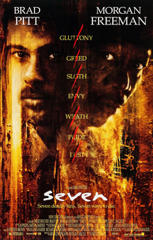
films2Thrillers that still hold up, selected with IMDb ratings of 7.0/10 or higher.
Published: 2026-09-09 · IMDb 7.0+Read article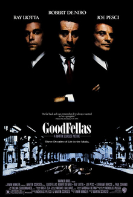
films3Crime films to watch in one sitting, selected with IMDb ratings of 7.0/10 or higher.
Published: 2026-09-11 · IMDb 7.0+Read article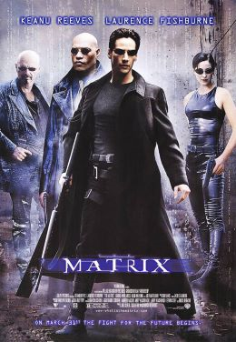
films4Science fiction that aged well, selected with IMDb ratings of 7.0/10 or higher.
Published: 2026-09-14 · IMDb 7.0+Read article films5
films5
Comedies that actually land, selected with IMDb ratings of 7.0/10 or higher.
Published: 2026-09-16 · IMDb 7.0+Read article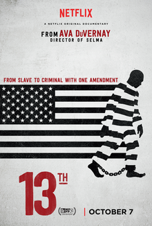
films6Documentaries that change how you see something, selected with IMDb ratings of 7.0/10 or higher.
Published: 2026-09-18 · IMDb 7.0+Read articleFilms for a family night in, selected with IMDb ratings of 7.0/10 or higher.
Published: 2026-09-21 · IMDb 7.0+Read article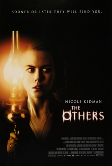
films8Horror built on tension rather than gore, selected with IMDb ratings of 7.0/10 or higher.
Published: 2026-09-23 · IMDb 7.0+Read article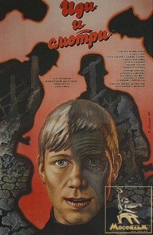
films9War films that avoid the clichés, selected with IMDb ratings of 7.0/10 or higher.
Published: 2026-09-25 · IMDb 7.0+Read article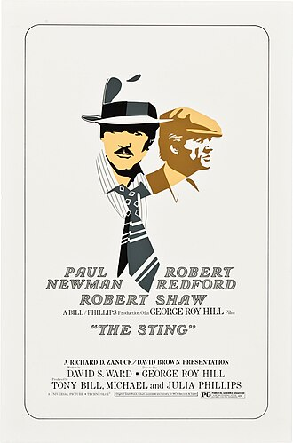
films10Heist films, ranked by how clever the plan is, selected with IMDb ratings of 7.0/10 or higher.
Published: 2026-09-28 · IMDb 7.0+Read article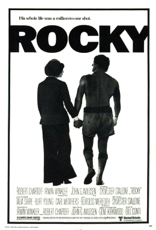
films11Sports films that work even if you don't follow the sport, selected with IMDb ratings of 7.0/10 or higher.
Published: 2026-09-30 · IMDb 7.0+Read article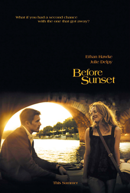
films12Films under 100 minutes, for a short evening, selected with IMDb ratings of 7.0/10 or higher.
Published: 2026-10-02 · IMDb 7.0+Read article series13
series13
Series to start when you've finished everything, selected with IMDb ratings of 7.0/10 or higher.
Published: 2026-10-05 · IMDb 7.0+Read article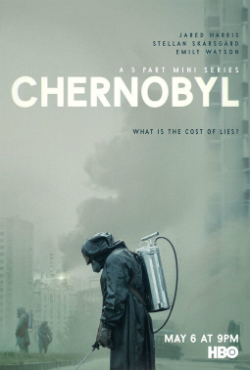
series14Limited series you can finish in a weekend, selected with IMDb ratings of 7.0/10 or higher.
Published: 2026-10-07 · IMDb 7.0+Read article series15
series15
The best crime series, country by country, selected with IMDb ratings of 7.0/10 or higher.
Published: 2026-10-09 · IMDb 7.0+Read article